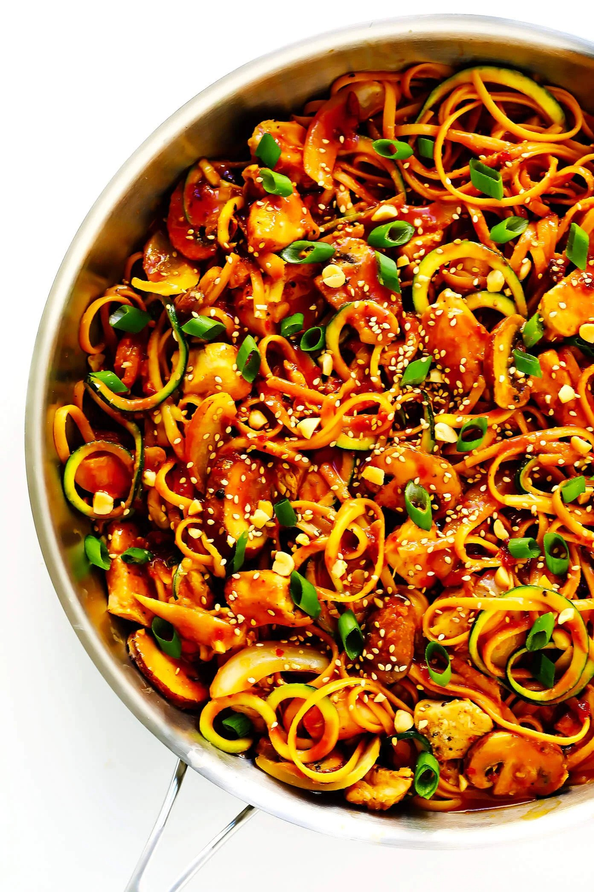

Kung Pao Chicken Noodle Stir Fry

Description:
This Kung Pao Chicken Noodle Stir-Fry recipe is quick and easy to make, totally easy to customize (with your favorite noodles, veggies, protein…you name it), and tossed with the most delicious kung pao peanut sauce.
It’s the perfect clean-out-the-fridge kind of meal, easy to customize whatever veggies or proteins (shrimp, beef, pork, or tofu would be other delicious options) you might have on hand. It can be made with whatever kind of noodles (pasta, rice noodles, udon, etc.) and/or veggie noodles (zucchini, sweet potato, etc.) you prefer. It’s tossed with the most delicious zesty kung pao peanut sauce that you can make as spicy or as mild as you’d like. It’s perfect for easy dinners or meal prep lunches for the week ahead, and tastes just as delicious hot or cold!
Ingredients:
Stir Fry Ingredients
- 8 ounces (uncooked) noodles of your choice (I used linguine)
- 2 tablespoons peanut oil or olive oil, divided
- 1 pound boneless skinless chicken breasts, cut into bite-sized pieces
- 1 small white onion, thinly sliced
- 8 ounces baby bella or white button mushrooms, thinly sliced
- 1 large zucchini, spiralized (or chopped into bite-sized pieces)
- 3 cloves garlic, peeled and minced
- 1 batch Kung Pao Sauce (see below)
- Toppings: chopped peanuts, thinly sliced green onions, toasted sesame seeds
Kung Pao Sauce Ingredients:
- 1/2 cup low-sodium soy sauce
- 1/4 cup natural peanut butter
- 1/4 cup rice vinegar
- 1 tablespoon chili garlic sauce (or sriracha)
- 1 tablespoon cornstarch
- 1/2 teaspoon ground ginger
- 1 tablespoon sesame oil
Steps:
To Make The Stir Fry
- Cook noodles al dente according to package instructions. Strain, drizzle with a bit of oil, and toss to combine. Set aside until ready to use.
- While the noodles are being prepared, heat 1 tablespoon oil in a large sauté pan or wok over medium-high heat. Season chicken evenly with a few pinches of salt and pepper, then add it to the pan. Cook for 3-4 minutes, stirring occasionally, until the chicken is cooked through and no longer pink inside. Transfer the chicken to a clean plate with a slotted spoon, and set aside.
- Add the remaining 1 tablespoon oil to the pan, along with the onion and mushrooms. Sauté for 4 minutes, stirring occasionally, until soft. Add the zucchini* and garlic and sauté for 2 more minutes, stirring occasionally.
- Stir in the Kung Pao Sauce, cooked chicken and rice noodles, and toss until everything is evenly combined. Cook for 1 more minute until it comes to a simmer.
- Remove from heat and serve immediately, garnished with your desired toppings.
To Make The Kung Pao Sauce
- Whisk all ingredients together in a small bowl until combined. If you would like a spicier sauce, add an extra tablespoon or two of the chili garlic sauce.